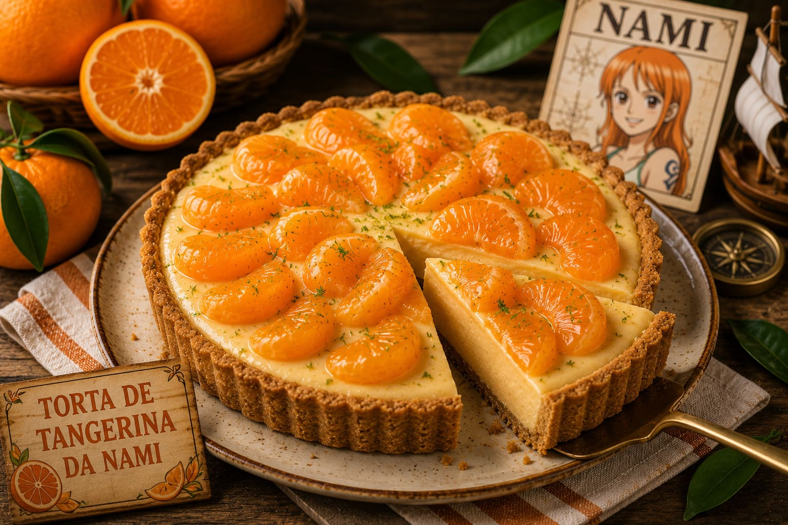

Torta de Tangerina da Nami

Uma sobremesa refrescante inspirada nas tangerinas da Nami, perfeita para fechar o banquete do Baratie.
Tempo: 40 minutos + 2 horas de geladeira
Rendimento: 8 fatias
Dificuldade: Fácil
Ingredientes
- 1 pacote de bolacha maisena
- 100g de manteiga derretida
- 1 lata de leite condensado
- 1 caixa de creme de leite
- Suco de 6 tangerinas
- Raspas de tangerina para decorar
Modo de Preparo
- Triture as bolachas até formar uma farinha fina.
- Misture a farofa de bolacha com a manteiga derretida.
- Espalhe a massa no fundo de uma forma, pressionando bem.
- Leve a base à geladeira enquanto prepara o recheio.
- No liquidificador, bata o leite condensado, o creme de leite e o suco das tangerinas.
- Bata até formar um creme liso e levemente firme.
- Despeje o creme sobre a base de bolacha.
- Leve à geladeira por pelo menos 2 horas.
- Finalize com raspas de tangerina por cima.
- Sirva gelada.
Dica do Chef
Use tangerinas bem maduras para deixar a torta mais doce e aromática.
Calculadora de Porções
Calcule uma média de fatias para seus convidados.